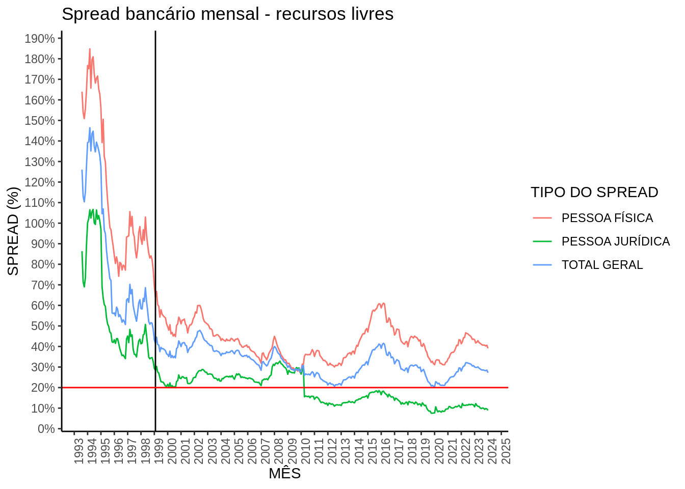

Notas sobre spread bancario
CONCEITOS DE SPREAD BANCARIO
SPREAD EX-POST: Diferença entre as receites apuradas de operações de crédito e dos custos de captação dos recursos empregados, mensurado após declaração do resultado contábil. Reflete o resultado efetivo da atividade de intermediação financeira.
SPREAD EX-ANTE: Diferença entre a taxa de juros cobrada em empréstimos e a taxa de captação da instituição credora, mensurado no momento da decisão da concessão do crédito: reflete decisões de precificação da instituição
Em ambos os casos, normalmente o spread é decomposto em: - Impostos diretos, indiretos e FGC: Inclui impostos como IR e CSLL, PIS, COFINS, IOF e custos com o FGC - Despesas administrativas: Custos gerais da administração do banco (gastos com funcionários, infraestrutura, etc) - Despesas de inadimplência/empréstimos: Inclui despesas com PDD (provisões de devedores duvidosos), recuperação de crédito, etc - Custos de compulsórios: Recolhimento de depósitos compulsórios das instituições junto ao BACEN - Margem líquida do banco: Tratado como resíduo do spread, representa a parcela do spread após todos os impostos e despesas.
Além do spread bancário, o BCB disponibiliza o ICC (Indicador de Custo de Crédito), que mensura o custo médio mensal para as famílias e empresas que tenham tomado crédito.
DISCUSSÕES SOBRE SPREAD BANCÁRIO NA LITERATURA
A abordagem no tratamento do spread é predominantemente econométrica, com diversos artigos e modelos propostos para estimar quais variáveis possuem mais impacto sobre o spread. De maneira geral, as variáveis aplicadas são divididas da seguinte forma:
- Variáveis macroeconômicas: inflação, PIB, PIB/capita, taxa básica de juros da economia, etc;
- Variáveis microeconômicas: concentração do mercado, rentabilidade das instituições, encaixes, custos operacionais, direcionamento de recursos de crédito, etc;
- Variáveis institucionais: tempo que demora para um crédito ser recuperado por vias judiciais, tempo para resolver insolvências, PDD, etc
Uma tentativa, baseada na classificação dessas variáveis, de classificar as possíveis abordagens sobre o problema do spread é feita abaixo:
FATORES MICROECONÔMICOS
COMPORTAMENTO DAS FIRMAS INTERMEDIADORAS FINANCEIRAS
Seriam os fundamentos teóricos da atividade de intermediação financeira, isso é, de que forma instituições especializadas na atividade de compra e vendas de títulos financeiros (no sentido de, papéis que representam o direito a uma obrigação financeira qualquer) se comportam no que diz respeito à sua atividade: os riscos que enfrentam (ex, risco moral, seleção adversa) oriundos de falhas de mercado, como lidam com esses riscos e como elas competem entre si.
Também é válido citar casos em que as firmas podem exercer essa função de forma parcial, como por exemplo nos casos de correspondentes bancários - firmas que não atuam necessariamente com a compra de outros títulos financeiros, mas, que através de uma instituição intermediadora concedem créditos para o público.
Entrando especificamente no mérito da concorrência, seria interessante avaliar se a concorrência traz menos ou mais estabilidade para o sistema financeiro como um todo e se a concorrência monopolística (concorrência por diferenciação de produtos) não seria condição suficiente para que os juros fossem suficientemente baixos.
A ausência da competição por parte de instituições internacionais também é um fator que chama atenção na questão da concorrência.
Por fim, vale destacar também como agentes intermediadores públicos interagem com agentes intermediadores privados, dado que em segmentos de crédito direcionado (habitação e agronegócio nomedamente) agentes públicos possuem uma atuação bastante significativa no Brasil.
COMPORTAMENTO DE FIRMAS INTERMEDIADORAS DE INFORMAÇÃO
Apesar de não estarem diretamente relacionadas com o spread bancário, as firmas que se especializam na obtenção e venda de informações utilizadas nas decisões tomadas pelas firmas intermediadoras financeiras poderiam exercer um impacto significativo do spread, dado que a qualidade com que os riscos são avaliados pelas últimas dependem intrinsicamente da qualidade do serviço oferecido pelas primeiras.
COMPORTAMENTO DAS FAMÍLIAS E EMPRESAS TOMADORAS
A inadimplência é frequentemente citada como um dos pontos principais pelos spreads altos no Brasil, é importante definir o que exatamente provoca a incapacidade de pagamento por parte de famílias e empresas - apesar de ser tentador atribuir esse problema única e exclusivamente à renda, é possível que outros fatores eventualmente possam vir a impactar na decisão de pagar ou não um empréstimo.
A dificuldade de recuperar dívidas no mercado (citado mais abaixo) poderia gerar alguns incentivos para que os agentes não pagassem suas dívidas propositadamente, dado que não haveriam consequências concretas na inadimplência.
Poderia ser interessante investigar como a percepção do tomador de crédito quanto as regras de concessão afeta o seu comportamento de pagamento - isso é, se a inadimplência não poderia ser parcialmente provocada por uma falta de compreensão das consequências do não pagamento de uma dívida.
“INTERFERÊNCIAS” NO MERCADO: CRÉDITO SUBSIDIADO E PARCELAMENTO SEM JUROS
Alguns autores argumentam que o crédito subsidiado gera subsídios cruzados, na medida em que bancos privados não podem deixar de oferecer créditos direcionados sob pena de perder uma parcela desse mercado, de forma que isso encareceria outras modalidades de crédito que teriam os juros compensados pelos juros mais baixos destes créditos direcionados.
Também é bastante citada na discussão sobre juros de cartão de crédito a existência do parcelamento sem juros, onde há o parcelamento de compras a longo-médio prazo sem o pagamento de juros - o argumento seria que o fato dessas compras a prazo não incorrerem em juros geraria distorções que fariam com que modalidades como o parcelamento da fatura e o rotativo sejam mais caros do que poderiam ser caso o parcelamento sem juros nãp existisse.
A cobrança de tarifas não relacionadas ao crédito (tarifas de serviçõs bancários) poderia ser um caminho para que receitas de outras fontes eventualmente permitissem a redução de receitas advindas de taxas de juros.
FATORES MACROECONÔMICOS
EFEITOS DE POUPANÇA E INVESTIMENTO
Há alguns autores que argumentem que a poupança deficitária e a ausência de investimento por parte de agentes privados provoque um crowding-out no mercado de crédito brasileiro, fazendo com que o governo acabe tomando boa parte do mercado que eventualmente seria destinado para tomadores privados de crédito.
VOLATILIDADE DA INFLAÇÃO
É um pouco mais óbvio como uma inflação instável (e, consequentemente, uma política monetária instável) poderia afetar o spread bancário, dado que a imprevisibilidade da pressão inflacionária distorceria as expectativas dos agentes e a própria alta da taxa básica de juros da economia provocaria um aumento da taxa de juros por parte das instituições credoras.
EFEITOS DE TRANSMISSÃO DE POLÍTICA MONETÁRIA
Existem alguns autores que colocam que bancos privados normalmente atuam de forma cíclica, de modo que os efeitos de política monetária seriam diretamente transmitidos no mercado de crédito, afetando algumas características como volume de novas concessões, taxas de juros, etc.
FATORES INSTITUCIONAIS/HISTÓRICOS
CUSTOS REGULATÓRIOS, TRIBUTÁRIOS E ADMINISTRATIVOS
Os tributos diretos, como a CSLL e IRPJ podem afetar o custo da concessão de crédito como um todo - há ainda também as limitações de desconto de PDD dos resultados tributáveis, de forma que as instituições que concedem crédito “pagariam” a perda duas vezes - no provisionamento e na tributação. Os tributos indiretos, como IOF, PIS e COFINS também incidem sobre as operações de crédito e podem impactar as taxas de juros.
Quanto aos custos regulatórios, além dos custos de reportar as informações aos órgãos reguladores e de se adequar a legislção vigente, vale destacar também (nos casos em que existem agências físicas) os custos de adequar cada agência a legislações locais, o que aumenta significativamente o custo de operação das agências. Vale também destacar os depósitos compulsórios e direcionados, que obrigam os bancos a direcionar parte dos recursos captados ou a modalidades específicas ou como encaixes ao Banco Central, o que reduz os recursos disponíveis para serem emprestados - valeria a investigação do quanto seria possível flexibilizar esses encaixes sem que a estabilidade do sistema financeiro fosse prejudicada.
Os custos administrativos tem mais relação com os custos com tecnologia, salários e processos judiciais - é notável, especificamente no Brasil, os altos custos com processos trabalhistas e com processos judiciais de recuperação de crédito.
É interessante também citar como o próprio mecanismo de provisão de devedores duvidosos pode afetar os incentivos do agente intermediador quando este conceder o crédito - por exemplo, a resolução 2682 do BACEN determina que as provisões devem ser feitas a medida que os créditos forem vencidos, enquanto a IFRS9 provisiona as perdas com base em perda esperada, o que pode alterar de forma bastante significativa o apetite de risco das instituições.
Por fim, é válido notar que o Brasil é aderente aos Acordos de Basileia, que estabelecem diversas exigências que regulam o funcionamento das instituições financeiras.
AMBIENTE JURÍDICO E REGULATÓRIO
Um fator muito citado no impacto do spread bancário é a insegurança jurídica envolvendo a concessão de operações de crédito em diversos aspectos: a falta de dispostivos adequados de cobrança e recuperação de crédito, a lentidão dos processos de recuperação (muito pela ausência de formas extrajudiciais de cobrança) e a falta de dispostivos adequados para regulação de operações eletrônicas. No que tange a crédito para empresas, também é muito citada a Lei de Falências, que seria inadequada em diversos sentidos para a recuperação dos créditos.
Quanto ao ambiente regulatório, algumas iniciativas como por exemplo o cadastro positivo, o open finance e a regulação de garantias para alguns produtos são frequentemente citadas como exemplos de medidas positivas que poderiam reduzir o custo do crédito. Seria também interessante considerar como outras regulações que dizem respeito às exigências de controle de riscos dessas instituições afetam os seus apetites e alocação de portfólio - o leque de garantidas que poderiam ser oferecidas em uma operação de crédito talvez poderia ser ampliado.
Existem algumas medidas aplicadas em outros contextos em que se buscou limitar artificialmente o teto das taxas de juros de alguns produtos, o que pode se provar eficaz em casos muito específicos em que os juros praticados se tornam exorbitantemente altos, ultrapassando preços que seriam adequados para certos produtos.
FORMAÇÃO HISTÓRICA DO MERCADO
Para citar o exemplo do mercado de bureaux de crédito, muitas dessas instituições tem um contexto histórico de serem formadas por associações de comerciantes que apontavam quais consumidores não pagavam suas obrigações junto as lojas, assim evitando fazer negócio com “caloteiros” - há também o caso da Serasa que foi fundada conjuntamente pelos maiores bancos brasileiros e posteriormente comprada por um grupo irlandês. Aspectos históricos na formação do mercado de crédito brasileiro, ou até de instituições particulares, podem ter algum impacto no motivo das taxas de juros cobradas serem tão altas.
Alguns exemplos notáveis: a readequação dessas instituições a um cenário onde a receita inflacionária deixou de existir e a série de fusões e aquisições que ocorreram tanto após o período inflacionário quanto as que ocorreram após 2008.
BREVE HISTÓRICO DO SPREAD BANCÁRIO E MERCADO DE CRÉDITO BRASILEIRO
Essa seção é dedicada a apresentar um breve histórico de estatísticas relevantes para o mercado de crédito brasileiro, bem como estabelecer uma linha do tempo desse mercado.
Os eventos aqui destacados foram separados em: - REGULAÇÃO OU LEI: Alterações regulatórias e legais em geral; - PLANOS ECONÔMICOS: Planos implementados pelo Governo Executivo; - CHOQUES ECONÔMICOS: Choques internos ou externos na economia; - ALTERAÇÕES DE MERCADO: Entrada ou saída de competidores relevantes do mercado.
Como a quantidade de fusões e aquisições que ocorreram no mercado brasileiro nesse período é bastante extensa, uma linha do tempo separada irá apresentar as F&As relevantes realizados pelas maiores intituições do mercado nesse período.
Os dois marcos históricos mais relevantes no fim dos anos 80 e início dos anos 90 são a implementação do Plano Real e o acordo Basileia I.
Os Acordos de Basileia passaram a requerer critérios mínimos de capital a fim de trazer mais segurança e liquidez no sistema financeiro - em conjunto com a alteração do contexto macroeconômico brasileiro, cerca de 6 anos depois, iniciou-se um grande movimento de consolidação do sistema bancário brasileiro.
O Plano Real estabilizou a inflação brasileira, o que desestabilizou de forma significativa o sistema bancário - boa parte das receitas bancárias vinham do float inflacionários: os recursos livres em transferência eram aplicados em operações de curtíssimo prazo, e quando o dinheiro era pago ao destinatário, o valor pago pelo banco era inferior aos ganhos das aplicações, dado que este havia sido corroído pela inflação.
Com a perda do ganho de arbitragen inflacionária, muitos bancos públicos e privados perderam a capacidade de operar no mercado devido a problemas de liquidez., motivando a criação do PROES (Programa de Incentivo à Redução do Setor Público Estadual na Atividade Bancária) e PROER (Programa de Estímulo à Reestruturação e ao Fortalecimento do Sistema Financeiro Nacional).
Esses dois programas incentivaram uma série de aquisições de bancos públicos e privados, de forma que entre 1995 e 2004 ocorreram cerca de 28 aquisições ou fusões bancárias, 24 das quais foram conduzidas pelos bancos privados que hoje são os 3 maiores bancos do Brasil em ativos totais.
Essa mudança se reflete em uma queda agressiva do spread de recursos livres1 a partir do início dos anos 2000 (linha destacada):

Após os anos 2000, o valor médio mensal do spread de créditos com recursos livres cai de 82% para 36%, um massivo sucesso da implementação do plano de estabilização monetária e dos programas de reestruturação bancária.
No entanto, dos anos 2000 para cá, o spread se manteve consistentemente acima de 20% ou mais, com destaque para o crédito de consumo para as famílias, que se manteve consideravelmente mais alto do que o crédito para as empresas. Desde então, diversas medidas e tentativas de reduzir o spread foram realizadas, com relativo insucesso.
Com esse ponto de partida, será feita uma tentativa de caracterizar as diversas medidas adotadas e eventos que possam ter impactado as variações do spread dos anos 2000 em diante. Também será importante acompanhar os ciclos de política monetária e econômica do período, que serão aqui representadas de forma extremamente simplificada pela taxa SELIC e inflação.
Por fim, também é fundamental fazer um acompanhamento da evolução das diferentes carteiras de crédito, principalmente no que tange à pessoas físicas, dado que a distribuição do portfólio de crédito pode impactar severamente o spread reportado, tanto no que tange ao tipo de crédito concedido quanto ao tipo de instituição que o concedeu.
CONCLUSÃO
Parece haver alguma convergência, em linhas gerais, quanto a que fatores exatamente impactam no spread bancário (custos administrativos, inadimplência, condução da política monetária/econômica, competição), embora não pareça haver um diagnóstico claro da causa dos altos spreads bancários brasileiros. Diversas contribuições teóricas foram feitas em termos de organização industrial e comportamento da firma bancária, embora boa parte da literatura recente se concentre em abordagens econométricas visando observar os determinantes principais do spread.
Em alguns casos, parece haver até mesmo discordância no tocante ao spread alto ser de fato um problema, dado que alguns autores irão argumentar que um setor bancário altamente rentável protegeria o sistema financeiro de resgastes governamentais e problemas de liquidez. No caso brasileiro especificamente, o problema do spread é particularmente notável no caso de créditos com recursos livres para pessoas físicas - em alguns casos específicos, parece haver um problema de oferta insuficiente para alguns mercados específicos, como o de crédito agrícola, crédito para micro e pequenas empresas, microcrédito e crédito para infraestrutura, todos esses sendo atentidos principalmente por bancos estatais.
Algumas particularidades do mercado de crédito brasileiro parecem ser bastante influenciadas por determinantes históricos - boa parte dos atuais grandes players privados se consolidaram após um período de profundas reformas econômicas promovidas pelo Executivo, enquanto os players públicos aparecem como vetores de atuação anticíclica e especialização em mercados não adequadamente capturados pela iniciativa privada.
Footnotes
É importantíssimo ressasltar que houve uma mudança metodológica relevante no cálculo de spread de 2011 em diante, de forma que o spread bancária de 2011 para trás não é comparável com as estatísticas atuais. A principal mudança foi a inclusão de crédito com recursos direcionados e de produtos relevantes, como o cartão de crédito.↩︎